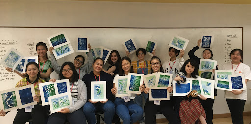

Other Tracks

Arts and Design Track
This track is for students interested in pursuing creative careers in:
- Music
- Theater
- Visual Arts
- Multimedia Arts
- Dance
Possible college courses:
- Fine Arts
- Graphic Design
- Architecture
- Communication Arts

Sports Track
This track focuses on developing students' skills and knowledge in:
- Safety and First Aid
- Human Movement
- Fundamentals of Coaching
- Sports Officiating
- Activity Management
- Fitness, Sports and Recreation Leadership
- Psychosocial Aspects of Sports
- Fitness Testing
- Exercise Programming